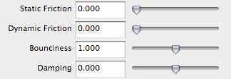

The animation and notes on this page explain how custom shaders written in the RenderMan Shading Language can be animated using Maya. As I mentioned on StColoration page, I wanted to animate shader with data from dynamic simulation in Maya. Simulation includes 4 passive and one active rigid body. There is no friction between them and they have bounciness value of 1. With these settings, the initial speed of the ball is constant and the simulation can run indefinitely. The crucial part of the simulation is behavior of the players. For this purpose I made a simple algorithm in a single line of MEL code. The behavior is controlled by the position of the ball and a noise function. As shown in the following code, the player's position is driven by Y position of the ball when the ball is closest to the player. When the ball is furthest, on the other hand, position of the player is function of noise and time.
player2_move.translateY=
ball.translateY*(-(ball.translateZ-4.8)/10)+(noise(time)/2)*(ball.translateZ-4.8);
player1_move.translateY=
ball.translateY*(-(-ball.translateZ-4.8)/10)+(noise(time+1000)/2)*(-4.8+ball.translateZ
To make the transition from one behavior to another gradual, I multiplied each behavior with opposite value of the ball's Z position relative to the distance between the players. To make behaviors of the two players off-sync I added 1000 to player's one time in noise function.
This video shows the development of the shader. At the beginning, there was only constant value output. Then, I added diffuse and specular component. And lastly, I made the white pixels constant because I wanted them to appear like light emitters. Also, at the end of this video you can see the results of the first experiments with the raster and analog video interference effect. You can download the shader here. Detailed explanation of the "pong screen shader" fallows. parts of the shader explined in the StColoration page are grayed ot.
//Basic Shader Declarations
surface pong( float Kd = 0.6, /* [0 10]*/
Ks = 0.8, /* [0 10]*/
roughness = 0.1,
player1 = 0.5, /* [0 1]*/
player2 = 0.2, /* [0 1]*/
ballY = 0.5, /* [0 1]*/
ballX = 0.2, /* [0 1]*/
offset = 0, /* [-1 1]*/ /* shifts the entire image up and down */
freq1 = 0, /* [0 1000 1]*/ /* freq1 for sine interference */
freq2 = 0, /* [0 1000 1]*/ /* freq2 for sine interference */
freq3 = 0, /* [0 1000 1]*/ /* freq3 for sine interference */
amplitude = 0, /* [0 100]*/ /* amp for sine interference */
separation = 1, /* [0 1] */ /* rgb raster/constant white blending*/
noiselevel = 1, /* [0 1] */ /* the ammount of noise */
frame = 0; /* used for noise animation */
color hiliteColor = 1,
surfColor = 0)
{
color surfcolor = surfColor;
normal n = normalize(N);
normal nf = faceforward(n, I);
float si = (s); /* creates secondary st space for image distorsion */
float ti = (t);
//INETFERENCE OFSET adds vertical ofset and repeats cropped content from the othe edge
ti = ti + offset;
if (ti >= 1)
ti = ti - 1;
if (ti <= 0)
ti = ti + 1;
//INETFERENCE SINE adds sine horizntal ofset and repeats the content as above
si = si + amplitude*(sin(t*freq1-1)+sin(t*freq2-2)+sin(t*freq3-3));
if (si >= 1)
si = si-1;
if (si >= 1)
si = si - 1;
if (si <= 0)
si = si + 1;
//Generates noise and sets the level
float whitenoise = noise(round((si+200*frame)*250)+0.5, round(((ti+1000*frame)+0.004)*200))*noiselevel;
//left paddle
if(si >= 0.03 && si <= 0.05 && ti >= player1-0.07 && ti <= player1+0.07)
surfcolor = color(1,1,1);
//right paddle
if(si >= 0.95 && si <= 0.97 && ti >= player2-0.07 && ti <= player2+0.07)
surfcolor = color(1,1,1);
//ball
if(si >= ballX-0.015 && si <= ballX+0.015 && ti >= ballY-0.015 && ti <= ballY+0.015)
surfcolor = color(1,1,1);
//middle line
if(si >= 0.49 && si <= 0.51 && ti >= 0.04 && ti <= 0.96)
surfcolor = color(1,1,1);
//border
float loop;
for (loop = 0.01; loop <= 1; loop += 0.04)
{
if((si >= loop && si <= loop+0.02)&&(ti >= 0.96 && ti <= 0.98 || ti >= 0.02 && ti <= 0.04))
surfcolor = color(1,1,1);
}
//Zero
float zeroPosX = 0.4;
float zeroPosY = 0.15;
if(si >= zeroPosX-0.04 && si <= zeroPosX+0.04 && ti >= zeroPosY-0.06 && ti <= zeroPosY+0.06)
surfcolor = color(1,1,1);
if(si >= zeroPosX-0.02 && si <= zeroPosX+0.02 && ti >= zeroPosY-0.05 && ti <= zeroPosY+0.05)
surfcolor = surfColor;
//Zero
zeroPosX = 0.65;
zeroPosY = 0.15;
if(si >= zeroPosX-0.04 && si <= zeroPosX+0.04 && ti >= zeroPosY-0.06 && ti <= zeroPosY+0.06)
surfcolor = color(1,1,1);
if(si >= zeroPosX-0.02 && si <= zeroPosX+0.02 && ti >= zeroPosY-0.05 && ti <= zeroPosY+0.05)
surfcolor = surfColor;
// diffuse component
color diffusecolor = 1;
if (surfcolor != color(1,1,1)){
color diffusecolor = diffuse(nf) * Kd * surfcolor;
}
// Adds noise and/or removes fill depending on noise level
surfcolor = surfcolor*(1-noiselevel)+whitenoise;
//Stripes - generates color variation based on s(si) value in steps of 0.001
//step size determens the width and number of the pixels
for (loop = 0.00; loop <= 1; loop += 0.004)
{
if(si >= loop && si <= loop+0.001)
/* pay attention how separation variable blends white and rgb pixels in this loop*/
surfcolor = surfcolor * (1, separation, separation);
if(si >= loop+0.001 && si <= loop+0.002)
surfcolor = surfcolor * (separation, 1, separation);
if(si >= loop+0.002 && si <= loop+0.003)
surfcolor = surfcolor * (separation, separation, 1);
if(si >= loop+0.003 && si <= loop+0.004)
/* previous line generates black pixel every 4th vertical line if separation variable is 0 */
surfcolor = surfcolor*(separation);
}
for (loop = 0.00; loop <= 1; loop += 0.005)
{
if(ti >= loop+0.003 && ti <= loop+0.004)
/* next line generates black pixel every 2nd horizontal line if separation variable is 0 */
surfcolor = surfcolor*(separation);
}
/* if you have any quetions feel free to email me */
/* and have a nice day */
// specular component
vector i = normalize(-I);
color speccolor = specular(nf, i, roughness) * hiliteColor * Ks;
//Final color output
Oi = Os;
Ci = Oi * Cs * surfcolor * (diffusecolor + speccolor) + speccolor;
}